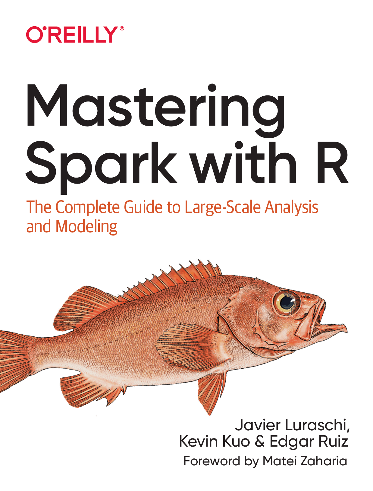

In a world where information is growing exponentially, tools like Apache Spark provide support to solve many of the relvant problems we face today. From companies looking for ways to improve based on data-driven decisions, to research organizations solving problems in health-care, finance, education, and energy, Spark enables analyzing much more information faster and more reliably than ever before.
Introduction
Javier Luraschi, Kevin Kuo, and Edgar Ruis have published a brand new book in 2020 on learning how to use Apache Spark with R. The book intends to take someone unfamiliar with Spark or R and help you become proficient by teaching you a set of tools, skills and practices applicable to large-scale data science.

Mastering Spark with R Github
Mastering Spark with R Code Examples
Buy the book here:
Mastering Spark with R
Another excellent online resource for learning Apache Spark with R is

Be aware that the Rstudio content is not intended to be read from start to finish and assumes that you, the reader, have some knowledge of Apache Spark, R, and cluster computing.
Richie Cotton of DataCamp also offers an overview course:
[]
(https://www.datacamp.com/courses/introduction-to-spark-in-r-using-sparklyr)
There are many additional resources that can help you to troubleshoot particular issues while getting started and, in general, introduce you to the broader Spark and R communities to help you get specific answers, discuss topics, and connect with many users actively using Spark with R. For general sparklyr questions, you can post in the RStudio Community tagged as sparklyr. For general Spark questions, Stack Overflow is a great resource; there are also many topics specifically about sparklyr. If you believe something needs to be fixed, open a GitHub issue or send a pull request.
To develop a definition of Apache Spark, we break it down as follows:
Unified
Spark supports many libraries, cluster technologies, and storage systems.
Analytics
Analytics is the discovery and interpretation of data to produce and communicate information.
Engine
Spark is expected to be efficient and generic.
Large-Scale
You can interpret large-scale as cluster-scale, a set of connected computers working together.
Audience
When thinking of who should use sparklyr, the following roles come to mind:
New Users
For new users, it is our belief that sparklyr provides the easiest way to get started with Spark. Our hope is that the early chapters of this book will get you up and running with ease and set you up for long-term success.
Data Scientists
For data scientists who already use and love R, sparklyr integrates with many other R practices and packages like dplyr, magrittr, broom, DBI, tibble, rlang, and many others, which will make you feel at home while working with Spark. For those new to R and Spark, the combination of high-level workflows available in sparklyr and low-level extensibility mechanisms make it a productive environment to match the needs and skills of every data scientist.
Expert Users
For those users who are already immersed in Spark and can write code natively in Scala, consider making your Spark libraries available as an R package to the R community, a diverse and skilled community that can put your contributions to good use while moving open science forward.
sparklyr is the R package that brings together these communities, expectations, future directions, packages, and package extensions.
Tip: When using Windows, avoid directories with spaces in their path. If running getwd() from R returns a path with spaces, consider switching to a path with no spaces using setwd(“path”) or by creating an RStudio project in a path with no spaces.
Additionally, because Spark is built in the Scala programming language, which is run by the Java Virtual Machine (JVM), you also need to install Java 8 on your system. It is likely that your system already has Java installed, but you should still check the version and update or downgrade as described in Installing Java. You can use the following R command to check which version is installed on your system:
getwd()
system("java -version")
[1] “C:/Users/jimgr/Documents/R/pubrepo/content/courses/MachineLearning”
java version “1.8.0_231”
Java(TM) SE Runtime Environment (build 1.8.0_231-b11)
Java HotSpot(TM) Client VM (build 25.231-b11, mixed mode, sharing)
[1] 0
Installation
As with many other R packages, you can install sparklyr from CRAN as follows:
install.packages("sparklyr")
packageVersion("sparklyr")
Start by loading sparklyr:
library(sparklyr)
You can easily install Spark by running spark_install(). This downloads, installs, and configures the latest version of Spark locally on your computer.
spark_install()
spark_version()
spark_available_versions()
Note: The default installation paths are ~/spark for macOS and Linux, and %LOCALAPPDATA%/spark for Windows. To customize the installation path, you can run options(spark.install.dir = “installation-path”) before spark_install() and spark_connect()
Connecting
sc <- spark_connect(master = "local", version = "2.4")
Using Spark
Now that you are connected, we can run a few simple commands. For instance, let’s start by copying the mtcars dataset into Apache Spark by using copy_to():
cars <- copy_to(sc, mtcars)
The data was copied into Spark, but we can access it from R using the cars reference. To print its contents, we can simply type cars:
cars
## # Source: spark<mtcars> [?? x 11]
## mpg cyl disp hp drat wt qsec vs am gear carb
## <dbl> <dbl> <dbl> <dbl> <dbl> <dbl> <dbl> <dbl> <dbl> <dbl> <dbl>
## 1 21 6 160 110 3.9 2.62 16.5 0 1 4 4
## 2 21 6 160 110 3.9 2.88 17.0 0 1 4 4
## 3 22.8 4 108 93 3.85 2.32 18.6 1 1 4 1
## 4 21.4 6 258 110 3.08 3.22 19.4 1 0 3 1
## 5 18.7 8 360 175 3.15 3.44 17.0 0 0 3 2
## 6 18.1 6 225 105 2.76 3.46 20.2 1 0 3 1
## 7 14.3 8 360 245 3.21 3.57 15.8 0 0 3 4
## 8 24.4 4 147. 62 3.69 3.19 20 1 0 4 2
## 9 22.8 4 141. 95 3.92 3.15 22.9 1 0 4 2
## 10 19.2 6 168. 123 3.92 3.44 18.3 1 0 4 4
## # ... with more rows
Web Interface
Most of the Spark commands are executed from the R console; however, monitoring and analyzing execution is done through Spark’s web interface. This interface is a web application provided by Spark that you can access by running:
spark_web(sc)
Analysis
When using Spark from R to analyze data, you can use SQL (Structured Query Language) or dplyr (a grammar of data manipulation). You can use SQL through the DBI package; for instance, to count how many records are available in our cars dataset, we can run the following:
library(DBI)
dbGetQuery(sc, "SELECT count(*) FROM mtcars")
## count(1)
## 1 32
When using dplyr, you write less code, and it’s often much easier to write than SQL. This is precisely why we won’t make use of SQL in this book; however, if you are proficient in SQL, this is a viable option for you. For instance, counting records in dplyr is more compact and easier to understand:
library(dplyr)
##
## Attaching package: 'dplyr'
## The following objects are masked from 'package:stats':
##
## filter, lag
## The following objects are masked from 'package:base':
##
## intersect, setdiff, setequal, union
count(cars)
## # Source: spark<?> [?? x 1]
## n
## <dbl>
## 1 32
In general, we usually start by analyzing data in Spark with dplyr, followed by sampling rows and selecting a subset of the available columns. The last step is to collect data from Spark to perform further data processing in R, like data visualization. Let’s perform a very simple data analysis example by selecting, sampling, and plotting the cars dataset in Spark:
select(cars, hp, mpg) %>%
sample_n(100) %>%
collect() %>%
plot()

Modeling
model <- ml_linear_regression(cars, mpg ~ hp)
model
## Formula: mpg ~ hp
##
## Coefficients:
## (Intercept) hp
## 30.09886054 -0.06822828
Now we can use this model to predict values that are not in the original dataset. For instance, we can add entries for cars with horsepower beyond 250 and also visualize the predicted values
model %>%
ml_predict(copy_to(sc, data.frame(hp = 250 + 10 * 1:10))) %>%
transmute(hp = hp, mpg = prediction) %>%
full_join(select(cars, hp, mpg)) %>%
collect() %>%
plot()
## Joining, by = c("hp", "mpg")

Extensions
In the same way that R is known for its vibrant community of package authors, at a smaller scale, many extensions for Spark and R have been written and are available. For instance, the sparkly.nested extension is an R package that extends sparklyr to help you manage values that contain nested information. A common use case involves JSON files that contain nested lists that require preprocessing before you can do meaningful data analysis. To use this extension, we first need to install it as follows:
install.packages("sparklyr.nested")
Then, we can use the sparklyr.nested extension to group all of the horsepower data points over the number of cylinders:
library(sparklyr.nested)
## Warning: package 'sparklyr.nested' was built under R version 3.6.2
sparklyr.nested::sdf_nest(cars, hp) %>%
group_by(cyl) %>%
summarise(data = collect_list(data))
## # Source: spark<?> [?? x 2]
## cyl data
## <dbl> <list>
## 1 4 <list [11]>
## 2 8 <list [14]>
## 3 6 <list [7]>
Streaming
While processing large static datasets is the most typical use case for Spark, processing dynamic datasets in real time is also possible and, for some applications, a requirement. You can think of a streaming dataset as a static data source with new data arriving continuously, like stock market quotes. Streaming data is usually read from Kafka (an open source stream-processing software platform) or from distributed storage that receives new data continuously.
To try out streaming, let’s first create an input/ folder with some data that we will use as the input for this stream:
dir.create("input")
## Warning in dir.create("input"): 'input' already exists
write.csv(mtcars, "input/cars_1.csv", row.names = F)
Then, we define a stream that processes incoming data from the input/ folder, performs a custom transformation in R, and pushes the output into an output/ folder:
stream <- stream_read_csv(sc, "input/") %>%
select(mpg, cyl, disp) %>%
stream_write_csv("output/")
As soon as the stream of real-time data starts, the input/ folder is processed and turned into a set of new files under the output/ folder containing the new transformed files. Since the input contained only one file, the output folder will also contain a single file resulting from applying the custom spark_apply() transformation.
dir("output", pattern = ".csv")
## [1] "part-00000-c8f671aa-13ec-4174-94d2-45226dc3cd75-c000.csv"
## [2] "part-00000-c9675c62-ad31-413d-9838-24a87996c176-c000.csv"
Up to this point, this resembles static data processing; however, we can keep adding files to the input/ location, and Spark will parallelize and process data automatically. Let’s add one more file and validate that it’s automatically processed:
# Write more data into the stream source
write.csv(mtcars, "input/cars_2.csv", row.names = F)
Wait a few seconds and validate that the data is processed by the Spark stream:
# Check the contents of the stream destination
dir("output", pattern = ".csv")
## [1] "part-00000-c8f671aa-13ec-4174-94d2-45226dc3cd75-c000.csv"
## [2] "part-00000-c9675c62-ad31-413d-9838-24a87996c176-c000.csv"
You should then stop the stream:
stream_stop(stream)
You can use dplyr, SQL, Spark models, or distributed R to analyze streams in real time. In Chapter 12 we properly introduce you to all the interesting transformations you can perform to analyze real-time data.
Logs
Logging is definitely less interesting than real-time data processing; however, it’s a tool you should be or become familiar with. A log is just a text file to which Spark appends information relevant to the execution of tasks in the cluster. For local clusters, we can retrieve all the recent logs by running the following:
spark_log(sc, filter = "sparklyr")
## 20/01/02 13:41:34 INFO SparkContext: Submitted application: sparklyr
## 20/01/02 13:41:35 INFO SparkContext: Added JAR file:/C:/Users/jimgr/Documents/R/win-library/3.6/sparklyr/java/sparklyr-2.4-2.11.jar at spark://127.0.0.1:59006/jars/sparklyr-2.4-2.11.jar with timestamp 1577994095155
## 20/01/02 13:42:44 INFO SparkContext: Submitted application: sparklyr
## 20/01/02 13:42:44 INFO SparkContext: Added JAR file:/C:/Users/jimgr/Documents/R/win-library/3.6/sparklyr/java/sparklyr-2.4-2.11.jar at spark://127.0.0.1:59174/jars/sparklyr-2.4-2.11.jar with timestamp 1577994164649
## 20/01/02 13:42:47 INFO Executor: Fetching spark://127.0.0.1:59174/jars/sparklyr-2.4-2.11.jar with timestamp 1577994164649
## 20/01/02 13:42:47 INFO Utils: Fetching spark://127.0.0.1:59174/jars/sparklyr-2.4-2.11.jar to C:\Users\jimgr\AppData\Local\spark\spark-2.4.3-bin-hadoop2.7\tmp\local\spark-2aa5fe5c-4391-41be-a12f-e977299e5f9e\userFiles-419835d9-e1d3-4161-b4a3-a4cfbe3b3d4d\fetchFileTemp5236050792410757813.tmp
## 20/01/02 13:42:47 INFO Executor: Adding file:/C:/Users/jimgr/AppData/Local/spark/spark-2.4.3-bin-hadoop2.7/tmp/local/spark-2aa5fe5c-4391-41be-a12f-e977299e5f9e/userFiles-419835d9-e1d3-4161-b4a3-a4cfbe3b3d4d/sparklyr-2.4-2.11.jar to class loader
## java.io.IOException: Failed to delete: C:\Users\jimgr\AppData\Local\spark\spark-2.4.3-bin-hadoop2.7\tmp\local\spark-2aa5fe5c-4391-41be-a12f-e977299e5f9e\userFiles-419835d9-e1d3-4161-b4a3-a4cfbe3b3d4d\sparklyr-2.4-2.11.jar
## java.io.IOException: Failed to delete: C:\Users\jimgr\AppData\Local\spark\spark-2.4.3-bin-hadoop2.7\tmp\local\spark-2aa5fe5c-4391-41be-a12f-e977299e5f9e\userFiles-419835d9-e1d3-4161-b4a3-a4cfbe3b3d4d\sparklyr-2.4-2.11.jar
## java.io.IOException: Failed to delete: C:\Users\jimgr\AppData\Local\spark\spark-2.4.3-bin-hadoop2.7\tmp\local\spark-2aa5fe5c-4391-41be-a12f-e977299e5f9e\userFiles-419835d9-e1d3-4161-b4a3-a4cfbe3b3d4d\sparklyr-2.4-2.11.jar
## 20/01/02 13:43:06 INFO SparkContext: Submitted application: sparklyr
## 20/01/02 13:43:06 INFO SparkContext: Added JAR file:/C:/Users/jimgr/Documents/R/win-library/3.6/sparklyr/java/sparklyr-2.4-2.11.jar at spark://127.0.0.1:59300/jars/sparklyr-2.4-2.11.jar with timestamp 1577994186521
## 20/01/02 13:47:01 INFO SparkContext: Submitted application: sparklyr
## 20/01/02 13:47:01 INFO SparkContext: Added JAR file:/C:/Users/jimgr/Documents/R/win-library/3.6/sparklyr/java/sparklyr-2.4-2.11.jar at spark://127.0.0.1:59595/jars/sparklyr-2.4-2.11.jar with timestamp 1577994421726
## 20/01/02 13:47:04 INFO Executor: Fetching spark://127.0.0.1:59595/jars/sparklyr-2.4-2.11.jar with timestamp 1577994421726
## 20/01/02 13:47:04 INFO Utils: Fetching spark://127.0.0.1:59595/jars/sparklyr-2.4-2.11.jar to C:\Users\jimgr\AppData\Local\spark\spark-2.4.3-bin-hadoop2.7\tmp\local\spark-84b3499f-35da-4011-8bdd-0a3f5167b341\userFiles-b3642d86-fcd5-4851-8f55-9ee9dcf14c85\fetchFileTemp4839239836642646819.tmp
## 20/01/02 13:47:05 INFO Executor: Adding file:/C:/Users/jimgr/AppData/Local/spark/spark-2.4.3-bin-hadoop2.7/tmp/local/spark-84b3499f-35da-4011-8bdd-0a3f5167b341/userFiles-b3642d86-fcd5-4851-8f55-9ee9dcf14c85/sparklyr-2.4-2.11.jar to class loader
## java.io.IOException: Failed to delete: C:\Users\jimgr\AppData\Local\spark\spark-2.4.3-bin-hadoop2.7\tmp\local\spark-84b3499f-35da-4011-8bdd-0a3f5167b341\userFiles-b3642d86-fcd5-4851-8f55-9ee9dcf14c85\sparklyr-2.4-2.11.jar
## java.io.IOException: Failed to delete: C:\Users\jimgr\AppData\Local\spark\spark-2.4.3-bin-hadoop2.7\tmp\local\spark-84b3499f-35da-4011-8bdd-0a3f5167b341\userFiles-b3642d86-fcd5-4851-8f55-9ee9dcf14c85\sparklyr-2.4-2.11.jar
## java.io.IOException: Failed to delete: C:\Users\jimgr\AppData\Local\spark\spark-2.4.3-bin-hadoop2.7\tmp\local\spark-84b3499f-35da-4011-8bdd-0a3f5167b341\userFiles-b3642d86-fcd5-4851-8f55-9ee9dcf14c85\sparklyr-2.4-2.11.jar
## 20/01/02 13:47:19 INFO SparkContext: Submitted application: sparklyr
## 20/01/02 13:47:20 INFO SparkContext: Added JAR file:/C:/Users/jimgr/Documents/R/win-library/3.6/sparklyr/java/sparklyr-2.4-2.11.jar at spark://127.0.0.1:59713/jars/sparklyr-2.4-2.11.jar with timestamp 1577994440260
## 20/01/02 13:47:33 INFO SparkContext: Submitted application: sparklyr
## 20/01/02 13:47:33 INFO SparkContext: Added JAR file:/C:/Users/jimgr/Documents/R/win-library/3.6/sparklyr/java/sparklyr-2.4-2.11.jar at spark://127.0.0.1:59849/jars/sparklyr-2.4-2.11.jar with timestamp 1577994453718
## 20/01/02 13:47:36 INFO Executor: Fetching spark://127.0.0.1:59849/jars/sparklyr-2.4-2.11.jar with timestamp 1577994453718
## 20/01/02 13:47:36 INFO Utils: Fetching spark://127.0.0.1:59849/jars/sparklyr-2.4-2.11.jar to C:\Users\jimgr\AppData\Local\spark\spark-2.4.3-bin-hadoop2.7\tmp\local\spark-9307471a-4d50-4668-bb21-b62fda21e67f\userFiles-2472c11c-808e-4b90-be78-d868b973ab65\fetchFileTemp4933013849357174334.tmp
## 20/01/02 13:47:37 INFO Executor: Adding file:/C:/Users/jimgr/AppData/Local/spark/spark-2.4.3-bin-hadoop2.7/tmp/local/spark-9307471a-4d50-4668-bb21-b62fda21e67f/userFiles-2472c11c-808e-4b90-be78-d868b973ab65/sparklyr-2.4-2.11.jar to class loader
## java.io.IOException: Failed to delete: C:\Users\jimgr\AppData\Local\spark\spark-2.4.3-bin-hadoop2.7\tmp\local\spark-9307471a-4d50-4668-bb21-b62fda21e67f\userFiles-2472c11c-808e-4b90-be78-d868b973ab65\sparklyr-2.4-2.11.jar
## java.io.IOException: Failed to delete: C:\Users\jimgr\AppData\Local\spark\spark-2.4.3-bin-hadoop2.7\tmp\local\spark-9307471a-4d50-4668-bb21-b62fda21e67f\userFiles-2472c11c-808e-4b90-be78-d868b973ab65\sparklyr-2.4-2.11.jar
## java.io.IOException: Failed to delete: C:\Users\jimgr\AppData\Local\spark\spark-2.4.3-bin-hadoop2.7\tmp\local\spark-9307471a-4d50-4668-bb21-b62fda21e67f\userFiles-2472c11c-808e-4b90-be78-d868b973ab65\sparklyr-2.4-2.11.jar
## 20/01/02 13:47:51 INFO SparkContext: Submitted application: sparklyr
## 20/01/02 13:47:51 INFO SparkContext: Added JAR file:/C:/Users/jimgr/Documents/R/win-library/3.6/sparklyr/java/sparklyr-2.4-2.11.jar at spark://127.0.0.1:59983/jars/sparklyr-2.4-2.11.jar with timestamp 1577994471843
## 20/01/02 13:48:24 INFO SparkContext: Submitted application: sparklyr
## 20/01/02 13:48:24 INFO SparkContext: Added JAR file:/C:/Users/jimgr/Documents/R/win-library/3.6/sparklyr/java/sparklyr-2.4-2.11.jar at spark://127.0.0.1:60143/jars/sparklyr-2.4-2.11.jar with timestamp 1577994504463
## 20/01/02 13:48:27 INFO Executor: Fetching spark://127.0.0.1:60143/jars/sparklyr-2.4-2.11.jar with timestamp 1577994504463
## 20/01/02 13:48:27 INFO Utils: Fetching spark://127.0.0.1:60143/jars/sparklyr-2.4-2.11.jar to C:\Users\jimgr\AppData\Local\spark\spark-2.4.3-bin-hadoop2.7\tmp\local\spark-e1c2413a-e349-4d9a-8481-4c7c7c957f51\userFiles-45014c8b-fbb0-4a44-b548-186a4d5586d7\fetchFileTemp1774485821301050512.tmp
## 20/01/02 13:48:27 INFO Executor: Adding file:/C:/Users/jimgr/AppData/Local/spark/spark-2.4.3-bin-hadoop2.7/tmp/local/spark-e1c2413a-e349-4d9a-8481-4c7c7c957f51/userFiles-45014c8b-fbb0-4a44-b548-186a4d5586d7/sparklyr-2.4-2.11.jar to class loader
## java.io.IOException: Failed to delete: C:\Users\jimgr\AppData\Local\spark\spark-2.4.3-bin-hadoop2.7\tmp\local\spark-e1c2413a-e349-4d9a-8481-4c7c7c957f51\userFiles-45014c8b-fbb0-4a44-b548-186a4d5586d7\sparklyr-2.4-2.11.jar
## java.io.IOException: Failed to delete: C:\Users\jimgr\AppData\Local\spark\spark-2.4.3-bin-hadoop2.7\tmp\local\spark-e1c2413a-e349-4d9a-8481-4c7c7c957f51\userFiles-45014c8b-fbb0-4a44-b548-186a4d5586d7\sparklyr-2.4-2.11.jar
## java.io.IOException: Failed to delete: C:\Users\jimgr\AppData\Local\spark\spark-2.4.3-bin-hadoop2.7\tmp\local\spark-e1c2413a-e349-4d9a-8481-4c7c7c957f51\userFiles-45014c8b-fbb0-4a44-b548-186a4d5586d7\sparklyr-2.4-2.11.jar
## 20/01/02 13:48:43 INFO SparkContext: Submitted application: sparklyr
## 20/01/02 13:48:43 INFO SparkContext: Added JAR file:/C:/Users/jimgr/Documents/R/win-library/3.6/sparklyr/java/sparklyr-2.4-2.11.jar at spark://127.0.0.1:60312/jars/sparklyr-2.4-2.11.jar with timestamp 1577994523932
## 20/01/02 13:51:47 INFO SparkContext: Submitted application: sparklyr
## 20/01/02 13:51:47 INFO SparkContext: Added JAR file:/C:/Users/jimgr/Documents/R/win-library/3.6/sparklyr/java/sparklyr-2.4-2.11.jar at spark://127.0.0.1:60560/jars/sparklyr-2.4-2.11.jar with timestamp 1577994707995
## 20/01/02 13:51:50 INFO Executor: Fetching spark://127.0.0.1:60560/jars/sparklyr-2.4-2.11.jar with timestamp 1577994707995
## 20/01/02 13:51:50 INFO Utils: Fetching spark://127.0.0.1:60560/jars/sparklyr-2.4-2.11.jar to C:\Users\jimgr\AppData\Local\spark\spark-2.4.3-bin-hadoop2.7\tmp\local\spark-4c25f5fb-99ce-493c-be13-ba6df9c72970\userFiles-b3311c6d-03f7-4354-b63d-955c56258b37\fetchFileTemp3023125751688504982.tmp
## 20/01/02 13:51:51 INFO Executor: Adding file:/C:/Users/jimgr/AppData/Local/spark/spark-2.4.3-bin-hadoop2.7/tmp/local/spark-4c25f5fb-99ce-493c-be13-ba6df9c72970/userFiles-b3311c6d-03f7-4354-b63d-955c56258b37/sparklyr-2.4-2.11.jar to class loader
## java.io.IOException: Failed to delete: C:\Users\jimgr\AppData\Local\spark\spark-2.4.3-bin-hadoop2.7\tmp\local\spark-4c25f5fb-99ce-493c-be13-ba6df9c72970\userFiles-b3311c6d-03f7-4354-b63d-955c56258b37\sparklyr-2.4-2.11.jar
## java.io.IOException: Failed to delete: C:\Users\jimgr\AppData\Local\spark\spark-2.4.3-bin-hadoop2.7\tmp\local\spark-4c25f5fb-99ce-493c-be13-ba6df9c72970\userFiles-b3311c6d-03f7-4354-b63d-955c56258b37\sparklyr-2.4-2.11.jar
## java.io.IOException: Failed to delete: C:\Users\jimgr\AppData\Local\spark\spark-2.4.3-bin-hadoop2.7\tmp\local\spark-4c25f5fb-99ce-493c-be13-ba6df9c72970\userFiles-b3311c6d-03f7-4354-b63d-955c56258b37\sparklyr-2.4-2.11.jar
## 20/01/02 13:52:05 INFO SparkContext: Submitted application: sparklyr
## 20/01/02 13:52:06 INFO SparkContext: Added JAR file:/C:/Users/jimgr/Documents/R/win-library/3.6/sparklyr/java/sparklyr-2.4-2.11.jar at spark://127.0.0.1:60684/jars/sparklyr-2.4-2.11.jar with timestamp 1577994726164
## 20/01/02 13:52:12 INFO Executor: Fetching spark://127.0.0.1:60684/jars/sparklyr-2.4-2.11.jar with timestamp 1577994726164
## 20/01/02 13:52:12 INFO Utils: Fetching spark://127.0.0.1:60684/jars/sparklyr-2.4-2.11.jar to C:\Users\jimgr\AppData\Local\spark\spark-2.4.3-bin-hadoop2.7\tmp\local\spark-13ae77ec-58c5-4e8d-9b43-2b06e0941494\userFiles-3fc8b98a-e387-4128-94b8-416032c80909\fetchFileTemp2563300702458924396.tmp
## 20/01/02 13:52:12 INFO Executor: Adding file:/C:/Users/jimgr/AppData/Local/spark/spark-2.4.3-bin-hadoop2.7/tmp/local/spark-13ae77ec-58c5-4e8d-9b43-2b06e0941494/userFiles-3fc8b98a-e387-4128-94b8-416032c80909/sparklyr-2.4-2.11.jar to class loader
## java.io.IOException: Failed to delete: C:\Users\jimgr\AppData\Local\spark\spark-2.4.3-bin-hadoop2.7\tmp\local\spark-13ae77ec-58c5-4e8d-9b43-2b06e0941494\userFiles-3fc8b98a-e387-4128-94b8-416032c80909\sparklyr-2.4-2.11.jar
## java.io.IOException: Failed to delete: C:\Users\jimgr\AppData\Local\spark\spark-2.4.3-bin-hadoop2.7\tmp\local\spark-13ae77ec-58c5-4e8d-9b43-2b06e0941494\userFiles-3fc8b98a-e387-4128-94b8-416032c80909\sparklyr-2.4-2.11.jar
## java.io.IOException: Failed to delete: C:\Users\jimgr\AppData\Local\spark\spark-2.4.3-bin-hadoop2.7\tmp\local\spark-13ae77ec-58c5-4e8d-9b43-2b06e0941494\userFiles-3fc8b98a-e387-4128-94b8-416032c80909\sparklyr-2.4-2.11.jar
## 20/01/02 13:54:12 INFO SparkContext: Submitted application: sparklyr
## 20/01/02 13:54:13 INFO SparkContext: Added JAR file:/C:/Users/jimgr/Documents/R/win-library/3.6/sparklyr/java/sparklyr-2.4-2.11.jar at spark://127.0.0.1:61043/jars/sparklyr-2.4-2.11.jar with timestamp 1577994853113
## 20/01/02 13:54:38 INFO Executor: Fetching spark://127.0.0.1:61043/jars/sparklyr-2.4-2.11.jar with timestamp 1577994853113
## 20/01/02 13:54:38 INFO Utils: Fetching spark://127.0.0.1:61043/jars/sparklyr-2.4-2.11.jar to C:\Users\jimgr\AppData\Local\spark\spark-2.4.3-bin-hadoop2.7\tmp\local\spark-aa575115-2847-4d68-abe5-15f48f61bf99\userFiles-729a3869-ff7b-4fc5-a1b1-3a1646a6ec22\fetchFileTemp342951406623107309.tmp
## 20/01/02 13:54:38 INFO Executor: Adding file:/C:/Users/jimgr/AppData/Local/spark/spark-2.4.3-bin-hadoop2.7/tmp/local/spark-aa575115-2847-4d68-abe5-15f48f61bf99/userFiles-729a3869-ff7b-4fc5-a1b1-3a1646a6ec22/sparklyr-2.4-2.11.jar to class loader
## java.io.IOException: Failed to delete: C:\Users\jimgr\AppData\Local\spark\spark-2.4.3-bin-hadoop2.7\tmp\local\spark-aa575115-2847-4d68-abe5-15f48f61bf99\userFiles-729a3869-ff7b-4fc5-a1b1-3a1646a6ec22\sparklyr-2.4-2.11.jar
## java.io.IOException: Failed to delete: C:\Users\jimgr\AppData\Local\spark\spark-2.4.3-bin-hadoop2.7\tmp\local\spark-aa575115-2847-4d68-abe5-15f48f61bf99\userFiles-729a3869-ff7b-4fc5-a1b1-3a1646a6ec22\sparklyr-2.4-2.11.jar
## java.io.IOException: Failed to delete: C:\Users\jimgr\AppData\Local\spark\spark-2.4.3-bin-hadoop2.7\tmp\local\spark-aa575115-2847-4d68-abe5-15f48f61bf99\userFiles-729a3869-ff7b-4fc5-a1b1-3a1646a6ec22\sparklyr-2.4-2.11.jar
## 20/01/02 16:04:11 INFO SparkContext: Submitted application: sparklyr
## 20/01/02 16:04:11 INFO SparkContext: Added JAR file:/C:/Users/jimgr/Documents/R/win-library/3.6/sparklyr/java/sparklyr-2.4-2.11.jar at spark://127.0.0.1:53349/jars/sparklyr-2.4-2.11.jar with timestamp 1578002651491
## 20/01/02 16:04:15 INFO Executor: Fetching spark://127.0.0.1:53349/jars/sparklyr-2.4-2.11.jar with timestamp 1578002651491
## 20/01/02 16:04:15 INFO Utils: Fetching spark://127.0.0.1:53349/jars/sparklyr-2.4-2.11.jar to C:\Users\jimgr\AppData\Local\spark\spark-2.4.3-bin-hadoop2.7\tmp\local\spark-b1d5947d-1e8d-4113-9b81-da75cba55021\userFiles-9ad894da-e841-4a2b-82fd-517d6ebbb5af\fetchFileTemp1257753856413346821.tmp
## 20/01/02 16:04:15 INFO Executor: Adding file:/C:/Users/jimgr/AppData/Local/spark/spark-2.4.3-bin-hadoop2.7/tmp/local/spark-b1d5947d-1e8d-4113-9b81-da75cba55021/userFiles-9ad894da-e841-4a2b-82fd-517d6ebbb5af/sparklyr-2.4-2.11.jar to class loader
## 20/01/03 10:53:42 INFO SparkContext: Submitted application: sparklyr
## 20/01/03 10:53:43 INFO SparkContext: Added JAR file:/C:/Users/jimgr/Documents/R/win-library/3.6/sparklyr/java/sparklyr-2.4-2.11.jar at spark://127.0.0.1:56059/jars/sparklyr-2.4-2.11.jar with timestamp 1578070423382
## 20/01/03 10:53:46 INFO Executor: Fetching spark://127.0.0.1:56059/jars/sparklyr-2.4-2.11.jar with timestamp 1578070423382
## 20/01/03 10:53:46 INFO Utils: Fetching spark://127.0.0.1:56059/jars/sparklyr-2.4-2.11.jar to C:\Users\jimgr\AppData\Local\spark\spark-2.4.3-bin-hadoop2.7\tmp\local\spark-52aec169-ffb9-41f1-adf8-73dca9486f0b\userFiles-b350b5ef-e684-40da-af05-6e25ee146a24\fetchFileTemp4580869859070593341.tmp
## 20/01/03 10:53:46 INFO Executor: Adding file:/C:/Users/jimgr/AppData/Local/spark/spark-2.4.3-bin-hadoop2.7/tmp/local/spark-52aec169-ffb9-41f1-adf8-73dca9486f0b/userFiles-b350b5ef-e684-40da-af05-6e25ee146a24/sparklyr-2.4-2.11.jar to class loader
## java.io.IOException: Failed to delete: C:\Users\jimgr\AppData\Local\spark\spark-2.4.3-bin-hadoop2.7\tmp\local\spark-52aec169-ffb9-41f1-adf8-73dca9486f0b\userFiles-b350b5ef-e684-40da-af05-6e25ee146a24\sparklyr-2.4-2.11.jar
## java.io.IOException: Failed to delete: C:\Users\jimgr\AppData\Local\spark\spark-2.4.3-bin-hadoop2.7\tmp\local\spark-52aec169-ffb9-41f1-adf8-73dca9486f0b\userFiles-b350b5ef-e684-40da-af05-6e25ee146a24\sparklyr-2.4-2.11.jar
## java.io.IOException: Failed to delete: C:\Users\jimgr\AppData\Local\spark\spark-2.4.3-bin-hadoop2.7\tmp\local\spark-52aec169-ffb9-41f1-adf8-73dca9486f0b\userFiles-b350b5ef-e684-40da-af05-6e25ee146a24\sparklyr-2.4-2.11.jar
## 20/01/03 10:54:01 INFO SparkContext: Submitted application: sparklyr
## 20/01/03 10:54:02 INFO SparkContext: Added JAR file:/C:/Users/jimgr/Documents/R/win-library/3.6/sparklyr/java/sparklyr-2.4-2.11.jar at spark://127.0.0.1:56180/jars/sparklyr-2.4-2.11.jar with timestamp 1578070442043
## 20/01/03 10:54:13 INFO Executor: Fetching spark://127.0.0.1:56180/jars/sparklyr-2.4-2.11.jar with timestamp 1578070442043
## 20/01/03 10:54:13 INFO Utils: Fetching spark://127.0.0.1:56180/jars/sparklyr-2.4-2.11.jar to C:\Users\jimgr\AppData\Local\spark\spark-2.4.3-bin-hadoop2.7\tmp\local\spark-60812e89-12f2-4207-8f8c-186542cd1752\userFiles-40444d6e-7a04-4cff-8f79-a7efc4f1b63e\fetchFileTemp8921957727771415792.tmp
## 20/01/03 10:54:13 INFO Executor: Adding file:/C:/Users/jimgr/AppData/Local/spark/spark-2.4.3-bin-hadoop2.7/tmp/local/spark-60812e89-12f2-4207-8f8c-186542cd1752/userFiles-40444d6e-7a04-4cff-8f79-a7efc4f1b63e/sparklyr-2.4-2.11.jar to class loader
## 20/01/03 10:54:34 INFO SparkContext: Submitted application: sparklyr
## 20/01/03 10:54:35 INFO SparkContext: Added JAR file:/C:/Users/jimgr/Documents/R/win-library/3.6/sparklyr/java/sparklyr-2.4-2.11.jar at spark://127.0.0.1:56327/jars/sparklyr-2.4-2.11.jar with timestamp 1578070475095
## 20/01/03 10:54:38 INFO Executor: Fetching spark://127.0.0.1:56327/jars/sparklyr-2.4-2.11.jar with timestamp 1578070475095
## 20/01/03 10:54:38 INFO Utils: Fetching spark://127.0.0.1:56327/jars/sparklyr-2.4-2.11.jar to C:\Users\jimgr\AppData\Local\spark\spark-2.4.3-bin-hadoop2.7\tmp\local\spark-eee85580-e143-48c1-a092-26382f2301e7\userFiles-1d44024b-c499-4ed9-be90-253863af667c\fetchFileTemp558323683217817457.tmp
## 20/01/03 10:54:38 INFO Executor: Adding file:/C:/Users/jimgr/AppData/Local/spark/spark-2.4.3-bin-hadoop2.7/tmp/local/spark-eee85580-e143-48c1-a092-26382f2301e7/userFiles-1d44024b-c499-4ed9-be90-253863af667c/sparklyr-2.4-2.11.jar to class loader
## java.io.IOException: Failed to delete: C:\Users\jimgr\AppData\Local\spark\spark-2.4.3-bin-hadoop2.7\tmp\local\spark-eee85580-e143-48c1-a092-26382f2301e7\userFiles-1d44024b-c499-4ed9-be90-253863af667c\sparklyr-2.4-2.11.jar
## java.io.IOException: Failed to delete: C:\Users\jimgr\AppData\Local\spark\spark-2.4.3-bin-hadoop2.7\tmp\local\spark-eee85580-e143-48c1-a092-26382f2301e7\userFiles-1d44024b-c499-4ed9-be90-253863af667c\sparklyr-2.4-2.11.jar
## java.io.IOException: Failed to delete: C:\Users\jimgr\AppData\Local\spark\spark-2.4.3-bin-hadoop2.7\tmp\local\spark-eee85580-e143-48c1-a092-26382f2301e7\userFiles-1d44024b-c499-4ed9-be90-253863af667c\sparklyr-2.4-2.11.jar
## java.io.IOException: Failed to delete: C:\Users\jimgr\AppData\Local\spark\spark-2.4.3-bin-hadoop2.7\tmp\local\spark-60812e89-12f2-4207-8f8c-186542cd1752\userFiles-40444d6e-7a04-4cff-8f79-a7efc4f1b63e\sparklyr-2.4-2.11.jar
## java.io.IOException: Failed to delete: C:\Users\jimgr\AppData\Local\spark\spark-2.4.3-bin-hadoop2.7\tmp\local\spark-60812e89-12f2-4207-8f8c-186542cd1752\userFiles-40444d6e-7a04-4cff-8f79-a7efc4f1b63e\sparklyr-2.4-2.11.jar
## java.io.IOException: Failed to delete: C:\Users\jimgr\AppData\Local\spark\spark-2.4.3-bin-hadoop2.7\tmp\local\spark-60812e89-12f2-4207-8f8c-186542cd1752\userFiles-40444d6e-7a04-4cff-8f79-a7efc4f1b63e\sparklyr-2.4-2.11.jar
## 20/01/03 16:36:49 INFO SparkContext: Submitted application: sparklyr
## 20/01/03 16:36:49 INFO SparkContext: Added JAR file:/C:/Users/jimgr/Documents/R/win-library/3.6/sparklyr/java/sparklyr-2.4-2.11.jar at spark://127.0.0.1:52583/jars/sparklyr-2.4-2.11.jar with timestamp 1578091009582
## 20/01/03 16:36:52 INFO Executor: Fetching spark://127.0.0.1:52583/jars/sparklyr-2.4-2.11.jar with timestamp 1578091009582
## 20/01/03 16:36:52 INFO Utils: Fetching spark://127.0.0.1:52583/jars/sparklyr-2.4-2.11.jar to C:\Users\jimgr\AppData\Local\spark\spark-2.4.3-bin-hadoop2.7\tmp\local\spark-a65c65f6-bbb6-4e09-8d0e-fac3cab7ea6c\userFiles-affeca5b-8193-4b27-b323-459e276e21d2\fetchFileTemp8946085174672082714.tmp
## 20/01/03 16:36:52 INFO Executor: Adding file:/C:/Users/jimgr/AppData/Local/spark/spark-2.4.3-bin-hadoop2.7/tmp/local/spark-a65c65f6-bbb6-4e09-8d0e-fac3cab7ea6c/userFiles-affeca5b-8193-4b27-b323-459e276e21d2/sparklyr-2.4-2.11.jar to class loader
Most of the time, you won’t need to worry about Spark logs, except in cases for which you need to troubleshoot a failed computation; in those cases, logs are an invaluable resource to be aware of. Now you know.
Disconnecting
For local clusters (really, any cluster), after you are done processing data, you should disconnect by running the following:
spark_disconnect_all()
## [1] 1
Analysis
This chapter introduces concepts to perform data analysis in Spark from R. Spoiler alert: these are the same tools used with plain R! This is not a mere coincidence; rather, we want data scientists to live in a world where technology is hidden from them, where you can use the R packages you know and love, and they “just work” in Spark!
In a data analysis project, the main goal is to understand what the data is trying to “tell us”, hoping that it provides an answer to a specific question. Most data analysis projects follow the same set of steps, from importing data, to wrangling>visualizing>modeling, to communicating results.
When working with not-large-scale datasets—as in datasets that fit in memory—we can perform all those steps from R, without using Spark. However, when data does not fit in memory or computation is simply too slow, we can slightly modify this approach by incorporating Spark. But how?
For data analysis, the ideal approach is to let Spark do what it’s good at. Spark is a(((“parallel execution”))) parallel computation engine that works at a large scale and provides a SQL engine and modeling libraries. You can use these to perform most of the same operations R performs. Such operations include data selection, transformation, and modeling.
Data import, wrangling, and modeling can be performed inside Spark. The idea is to use R to tell Spark what data operations to run, and then only bring the results into R. As illustrated here, the ideal method pushes compute to the Spark cluster, and then collects results into R.
The sparklyr package aids in using the “push compute, collect results” principle. Most of its functions are wrappers on top of Spark API calls. This allows us to take advantage of Spark’s analysis components, instead of R’s. For example, when you need to fit a linear regression model, instead of using R’s familiar lm() function, you would use Spark’s ml_linear_regression() function. This R function then calls Spark to create this model.
For more common data manipulation tasks, sparklyr provides a backend for dplyr. This means you can use dplyr verbs with which you’re already familiar in R, and then sparklyr and dplyr will translate those actions into Spark SQL statements, which are generally more compact and easier to read than SQL statements. So, if you are already familiar with R and dplyr, there is nothing new to learn. This might feel a bit anticlimactic—indeed, it is—but it’s also great since you can focus that energy on learning other skills required to do large-scale computing.
To start, load the sparklyr and dplyr packages and then open a new local connection.
library(sparklyr)
library(dplyr)
sc<- spark_connect(master = "local", version = "2.4")
When using Spark with R, you need to approach importing data differently. Usually, importing means that R will read files and load them into memory; when you are using Spark, the data is imported into Spark, not R. In Figure 3.5, notice how the data source is connected to Spark instead of being connected to R.
Note: When you doing analysis over large-scale datasets, the vast majority of the necessary data will be already available in your Spark cluster (which is usually made available to users via Hive tables, or by accessing the file system directly), the Data chapter will cover this extensively.
Rather than importing all data into Spark, you can also request Spark to access the data source without importing it – this is a decision you should make based on speed and performance. Importing all of the data into the Spark session will incur a up-front cost, once; since Spark needs to wait for the data to be loaded before analyzing it. If the data is not imported, you usually incur a cost with every Spark operation since Spark needs to retrieve a subset from the cluster’s storage, which is usually disk drives that happen to be much slower than reading from Spark’s memory. More will be covered in the Tuning chapter.
Let’s prime the session with some data by importing mtcars into Spark using copy_to(); you can also import data from distributed files in many different file formats, which you’ll learn in the Data chapter.
cars <- copy_to(sc, mtcars)
Note: In an enterprise setting, copy_to() should only be used to transfer small tables from R, large data transfers should be performed with specialized data transfer tools.
The data is now accessible to Spark and transformations can now be applied with ease; the next section will cover how to wrangle data by running transformations inside Spark, using dplyr.
Data wrangling uses transformations to understand the data, it is often referred to as the process of transforming data from one “raw” data form into another format with the intent of making it more appropriate for data analysis.
In the R environment, cars can be treated as if it is a local data frame, so dplyr verbs can be used. For instance, we can find out the mean of all columns as with summarise_all():
summarize_all(cars, mean)
While this code is exactly the same as the code you would run when using dplyr without Spark, a lot is happening under the hood! The data is NOT being imported into R; instead,dplyr converts this task into SQL statements that are then sent to Spark. The show_query() command makes it possible to peer into the SQL statement that sparklyr and dplyr created and sent to Spark. We can also use this time to introduce the pipe (%>%) operator, a custom operator from the magrittr package that takes pipes a computation into the first argument of the next function, making your data analysis much easier to read.
summarize_all(cars, mean) %>%
show_query()
As it is evident, dplyr is much more concise than SQL; but rest assured, you will not have to see nor understand SQL when using dplyr. Your focus can remain on obtaining insights from the data, as opposed to figuring out how to express a given set of transformation in SQL. Here is another example that groups the cars dataset by “transmission” type.
cars %>%
mutate(transmission = ifelse(am == 0, "automatic", "manual")) %>%
group_by(transmission) %>%
summarise_all(mean)
## Warning: Missing values are always removed in SQL.
## Use `mean(x, na.rm = TRUE)` to silence this warning
## This warning is displayed only once per session.
## # Source: spark<?> [?? x 12]
## transmission mpg cyl disp hp drat wt qsec vs am gear carb
## <chr> <dbl> <dbl> <dbl> <dbl> <dbl> <dbl> <dbl> <dbl> <dbl> <dbl> <dbl>
## 1 manual 24.4 5.08 144. 127. 4.05 2.41 17.4 0.538 1 4.38 2.92
## 2 automatic 17.1 6.95 290. 160. 3.29 3.77 18.2 0.368 0 3.21 2.74
Built-in Functions
Spark SQL is based on Hive’s SQL conventions and functions and it is possible to call all these functions using dplyr as well. This means that we can use any Spark SQL functions to accomplish operations that may not be available via dplyr. The functions can be accessed by calling them as if they were R functions. Instead of failing, dplyr passes functions it does not recognize “as-is” to the query engine. This gives us a lot of flexibility on the function we can use!
For instance, the percentile function returns the exact percentile of a column in a group. The function expects a column name, and either a single percentile value, or an array of multiple percentile values. We can use this Spark SQL function from dplyr as follows:
summarise(cars, mpg_percentile = percentile(mpg, 0.25))
## # Source: spark<?> [?? x 1]
## mpg_percentile
## <dbl>
## 1 15.4
There is no percentile() function in R, so dplyr passes the that portion of the code, “as-is”, to the resulting SQL query.
summarise(cars, mpg_percentile = percentile(mpg, 0.25)) %>%
show_query()
## <SQL>
## SELECT percentile(`mpg`, 0.25) AS `mpg_percentile`
## FROM `mtcars`
Correlations
A very common exploration technique is to calculate and visualize correlations, which we often calculate to find out what kind of statistical relationship exists between paired sets of variables. Spark provides functions to calculate correlations across the entire dataset and returns the results to R as a DataFrame object:
ml_corr(cars)
## # A tibble: 11 x 11
## mpg cyl disp hp drat wt qsec vs am gear
## <dbl> <dbl> <dbl> <dbl> <dbl> <dbl> <dbl> <dbl> <dbl> <dbl>
## 1 1 -0.852 -0.848 -0.776 0.681 -0.868 0.419 0.664 0.600 0.480
## 2 -0.852 1 0.902 0.832 -0.700 0.782 -0.591 -0.811 -0.523 -0.493
## 3 -0.848 0.902 1 0.791 -0.710 0.888 -0.434 -0.710 -0.591 -0.556
## 4 -0.776 0.832 0.791 1 -0.449 0.659 -0.708 -0.723 -0.243 -0.126
## 5 0.681 -0.700 -0.710 -0.449 1 -0.712 0.0912 0.440 0.713 0.700
## 6 -0.868 0.782 0.888 0.659 -0.712 1 -0.175 -0.555 -0.692 -0.583
## 7 0.419 -0.591 -0.434 -0.708 0.0912 -0.175 1 0.745 -0.230 -0.213
## 8 0.664 -0.811 -0.710 -0.723 0.440 -0.555 0.745 1 0.168 0.206
## 9 0.600 -0.523 -0.591 -0.243 0.713 -0.692 -0.230 0.168 1 0.794
## 10 0.480 -0.493 -0.556 -0.126 0.700 -0.583 -0.213 0.206 0.794 1
## 11 -0.551 0.527 0.395 0.750 -0.0908 0.428 -0.656 -0.570 0.0575 0.274
## # ... with 1 more variable: carb <dbl>
The corrr R package specializes in correlations. It contains friendly functions to prepare and visualize the results. Included inside the package is a backend for Spark, so when a Spark object is used in corrr, the actual computation also happens in Spark. In the background, the correlate() function runs sparklyr::ml_corr(), so there is no need to collect any data into R prior to running the command:
corrr::correlate(cars, use = "pairwise.complete.obs", method = "pearson")
##
## Correlation method: 'pearson'
## Missing treated using: 'pairwise.complete.obs'
## # A tibble: 11 x 12
## rowname mpg cyl disp hp drat wt qsec vs am
## <chr> <dbl> <dbl> <dbl> <dbl> <dbl> <dbl> <dbl> <dbl> <dbl>
## 1 mpg NA -0.852 -0.848 -0.776 0.681 -0.868 0.419 0.664 0.600
## 2 cyl -0.852 NA 0.902 0.832 -0.700 0.782 -0.591 -0.811 -0.523
## 3 disp -0.848 0.902 NA 0.791 -0.710 0.888 -0.434 -0.710 -0.591
## 4 hp -0.776 0.832 0.791 NA -0.449 0.659 -0.708 -0.723 -0.243
## 5 drat 0.681 -0.700 -0.710 -0.449 NA -0.712 0.0912 0.440 0.713
## 6 wt -0.868 0.782 0.888 0.659 -0.712 NA -0.175 -0.555 -0.692
## 7 qsec 0.419 -0.591 -0.434 -0.708 0.0912 -0.175 NA 0.745 -0.230
## 8 vs 0.664 -0.811 -0.710 -0.723 0.440 -0.555 0.745 NA 0.168
## 9 am 0.600 -0.523 -0.591 -0.243 0.713 -0.692 -0.230 0.168 NA
## 10 gear 0.480 -0.493 -0.556 -0.126 0.700 -0.583 -0.213 0.206 0.794
## 11 carb -0.551 0.527 0.395 0.750 -0.0908 0.428 -0.656 -0.570 0.0575
## # ... with 2 more variables: gear <dbl>, carb <dbl>
We can pipe the results to other corrr functions. For example, the shave() function turns all of the duplicated results into NAs. Again, while this feels like standard R code using existing R packages, Spark is being used under the hood to perform the correlation.
Additionally, as shown in Figure 3.6, the results can be easily visualized using the rplot() function, as shown here:
corrr::correlate(cars, use = "pairwise.complete.obs", method = "pearson") %>%
corrr::shave() %>%
corrr::rplot()
##
## Correlation method: 'pearson'
## Missing treated using: 'pairwise.complete.obs'
## Don't know how to automatically pick scale for object of type noquote. Defaulting to continuous.

Visualize
R is great at data visualizations. Its capabilities for creating plots is extended by the many R packages that focus on this analysis step. Unfortunately, the vast majority of R functions that create plots depend on the data already being in local memory within R, so they fail when using a remote table inside Spark.
It is possible to create visualizations in R from data source from Spark. To understand how to do this, let’s first break down how computer programs build plots: It takes the raw data and performs some sort of transformation. The transformed data is then mapped to a set of coordinates. Finally, the mapped values are drawn in a plot. Figure 2 summarizes each of the steps.
In essence, the approach for visualizing is the same as in wrangling, push the computation to Spark, and then collect the results in R for plotting. The heavy lifting of preparing the data, such as in aggregating the data by groups or bins, can be done inside Spark, and then collect the much smaller data set into R. Inside R, the plot becomes a more basic operation. For example, to plot a histogram, the bins are calculated in Spark, and then in R, use a simple column plot, as opposed to a histogram plot, because there is no need for R to re-calculate the bins.
Using this conceptual model, let’s apply this when using ggplot2.
Using ggplot2
To create a bar plot using ggplot2, we simply call a function:
ggplot(aes(as.factor(cyl), mpg), data = mtcars) + geom_col()
In this case, the mtcars raw data was automatically transformed into three discrete aggregated numbers, then each result was mapped into an x and y plane, and then the plot was drawn. As R users, all of the stages of building the plot are conveniently abstracted for us.
In Spark, there are a couple of key steps when codifying the “push compute, collect results” approach. First, ensure that the transformation operations happen inside Spark. In the example below, group_by() and summarise() will run as inside Spark. The second is to bring the results back into R after the data has been transformed. Make sure to transform and then collect, in that order; if collect() is run first, then R will try to ingest the entire data set from Spark. Depending on the size of the data, collecting all of the data will slow down or may even bring down your system.
car_group <- cars %>%
group_by(cyl) %>%
summarise(mpg = sum(mpg, na.rm = TRUE)) %>%
collect() %>%
print()
## # A tibble: 3 x 2
## cyl mpg
## <dbl> <dbl>
## 1 4 293.
## 2 8 211.
## 3 6 138.
In this example, now that the data has been pre-aggregated and collected into R, only three records are passed to the plotting function.
ggplot(aes(as.factor(cyl), mpg), data = car_group) +
geom_col(fill = "#999999") + coord_flip()

Using dbplot
The dbplot package provides helper functions for plotting with remote data. The R code dbplot uses to transform the data is written so that it can be translated into Spark. It then uses those results to create a graph using the ggplot2 package where data transformation and plotting are both triggered by a single function.
The dbplot_histogram() function makes Spark calculate the bins and the count per bin and outputs a ggplot object which can be further refined by adding more steps to the plot object. dbplot_histogram() also accepts a binwidth argument to control the range used to compute the bins
library(dbplot)
cars %>%
dbplot_histogram(mpg, binwidth = 3) +
coord_flip()+
labs(title = "MPG Distribution",
subtitle = "Histogram over miles per gallon")

Histograms provide a great way to analyze a single variable. To analyze two variables, a scatter or raster plot is commonly used.
Scatter plots are used to compare the relationship between two continuous variables. For example, a scatter plot will display the relationship between the weight of a car and its gas consumption. The plot will show that the higher the weight, the higher the gas consumption because the dots clump together into almost a line that goes from the top left towards the bottom right. See Figure ?? for an example of the plot.

However, for scatter plots, no amount of “pushing the computation” to Spark will help with this problem because the data has to be plotted in individual dots.
The best alternative is to find a plot type that represents the x/y relationship and concentration in a way that it is easy to perceive and to “physically” plot. The raster plot may be the best answer. It returns a grid of x/y positions and the results of a given aggregation usually represented by the color of the square.
You can use dbplot_raster() to create a scatter-like plot in Spark, while only retrieving a small subset of the remote dataset:
Tip: You can also use dbplot to retrieve the raw data and visualize by other means; to retrieve the aggregates but not the plots use: db_compute_bins(), db_compute_count(), db_compute_raster() and db_compute_boxplot().
Model
First, an analysis project goes through as many transformations and models to find the answer. The ideal data analysis language enables you to quickly adjust over each wrangle-visualize-model iteration. Fortunately, this is the case when using Spark and R.
To illustrate how easy it is to iterate over wrangling and modeling in Spark, consider the following example. We will start by performing a linear regression against all features and predict MPG:
cars %>%
ml_linear_regression(mpg ~ .) %>%
summary()
It is also very easy to iterate with other kinds of models. The following one replaces the linear model with a generalized linear model:
cars %>%
ml_generalized_linear_regression(mpg ~ hp + cyl) %>%
summary()
Caching
The examples in this chapter are built using a very small data set. In real-life scenarios, large amounts of data are used for models. If the data needs to be transformed first, the volume of the data could exact a heavy toll on the Spark session. Before fitting the models, it is a good idea to save the results of all the transformations in a new table inside Spark memory.
The compute() command can take the end of a dplyr piped command set and save the results to Spark memory.
cached_cars <- cars %>%
mutate(cyl = paste0("cyl_", cyl)) %>%
compute("cached_cars")
cached_cars %>%
ml_linear_regression(mpg ~ .) %>%
summary()
## Deviance Residuals:
## Min 1Q Median 3Q Max
## -3.47339 -1.37936 -0.06554 1.05105 4.39057
##
## Coefficients:
## (Intercept) cyl_cyl_8.0 cyl_cyl_4.0 disp hp drat
## 16.15953652 3.29774653 1.66030673 0.01391241 -0.04612835 0.02635025
## wt qsec vs am gear carb
## -3.80624757 0.64695710 1.74738689 2.61726546 0.76402917 0.50935118
##
## R-Squared: 0.8816
## Root Mean Squared Error: 2.041
As more insights are gained from the data, more questions may be raised. That is why we expect to iterate through data wrangle, visualize, and model multiple times. Each iteration should provide incremental insights of what the data is “telling us”. There will be a point where we reach a satisfactory level of understanding. It is at this point that we will be ready to share the results of the analysis, this is the topic of the next section.
Communicate
It is important to clearly communicate the analysis results – as important as the analysis work itself! The public, colleagues or stakeholders need to understand what you found out and how.
To communicate effectively we need to use artifacts, such as reports and presentations; these are common output formats that we can create in R, using R Markdown.
R Markdown documents allow weave narrative text and code together. The amount of output formats provides a very compelling reason to learn and use R Markdown. There are many available output formats like HTML, PDF, PowerPoint, Word, web slides, Websites, books and so on.
Since an R Markdown document is self-contained and meant to be reproducible, before rendering documents we should first disconnect from Spark to free resources:
spark_disconnect(sc)
Modeling
The examples here will utilize the OkCupid dataset [@kim2015okcupid], available at github.com/r-spark/okcupid. The dataset consists of user profile data from an online dating site, and contains a diverse set of features, including biographical characteristics such as gender and profession, and free text fields related to personal interests. There are about 60,000 profiles in the dataset, which fits comfortably into memory on a modern laptop and wouldn’t be considered “big data”, so you can easily follow along running Spark local mode.
Download this dataset as follows:
download.file(
"https://github.com/r-spark/okcupid/raw/master/profiles.csv.zip",
"okcupid.zip")
unzip("okcupid.zip", exdir = "data")
unlink("okcupid.zip")
Consider the following problem:
Predict whether someone is actively working, i.e. not retired, a student, or unemployed.
Next up, we will explore this dataset.
Exploratory Data Analysis
Exploratory data analysis (EDA), in the context of predictive modeling, is the exercise of looking at excerpts and summaries of the data. The specific goals of the EDA stage is informed by the business problem, but here are some common objectives:
- Check for data quality — confirm meaning and prevalence of missing values and reconcile statistics against existing controls,
- Understand univariate relationships between variables, and
- Perform an initial assessment on what variables to include and what transformations need to be done on them.
We’ll first connect to Spark, load libraries and read in the data.
library(sparklyr)
library(ggplot2)
library(dbplot)
library(dplyr)
sc <- spark_connect(master = "local", version = "2.4")
okc <- spark_read_csv(
sc,
"d:/the-r-in-spark-1.0.0/profiles.csv",
# "data/profiles.csv",
escape = "\"",
memory = FALSE,
options = list(multiline = TRUE)
) %>%
mutate(
height = as.numeric(height),
income = ifelse(income == "-1", NA, as.numeric(income))
) %>%
mutate(sex = ifelse(is.na(sex), "missing", sex)) %>%
mutate(drinks = ifelse(is.na(drinks), "missing", drinks)) %>%
mutate(drugs = ifelse(is.na(drugs), "missing", drugs)) %>%
mutate(job = ifelse(is.na(job), "missing", job))
We specify escape = "\"" and options = list(multiline = TRUE) here to accommodate for embedded quote characters and newlines in the essay fields. We also convert the height and income columns to numeric types, and recode missing values in the string columns. Note that it may very well take a few tries of specifying different parameters to get the initial data ingest correct, and sometimes you may have to revisit this step after you learn more about the data during modeling.
We can now take a quick look at our data with glimpse():
glimpse(okc)
## Observations: ??
## Variables: 31
## Database: spark_connection
## $ age <int> 22, 35, 38, 23, 29, 29, 32, 31, 24, 37, 35, 28, 24, 30,...
## $ body_type <chr> "a little extra", "average", "thin", "thin", "athletic"...
## $ diet <chr> "strictly anything", "mostly other", "anything", "veget...
## $ drinks <chr> "socially", "often", "socially", "socially", "socially"...
## $ drugs <chr> "never", "sometimes", "missing", "missing", "never", "m...
## $ education <chr> "working on college/university", "working on space camp...
## $ essay0 <chr> "about me:<br />\n<br />\ni would love to think that i ...
## $ essay1 <chr> "currently working as an international agent for a frei...
## $ essay2 <chr> "making people laugh.<br />\nranting about a good salti...
## $ essay3 <chr> "the way i look. i am a six foot half asian, half cauca...
## $ essay4 <chr> "books:<br />\nabsurdistan, the republic, of mice and m...
## $ essay5 <chr> "food.<br />\nwater.<br />\ncell phone.<br />\nshelter....
## $ essay6 <chr> "duality and humorous things", NA, NA, "cats and german...
## $ essay7 <chr> "trying to find someone to hang out with. i am down for...
## $ essay8 <chr> "i am new to california and looking for someone to wisp...
## $ essay9 <chr> "you want to be swept off your feet!<br />\nyou are tir...
## $ ethnicity <chr> "asian, white", "white", NA, "white", "asian, black, ot...
## $ height <dbl> 75, 70, 68, 71, 66, 67, 65, 65, 67, 65, 70, 72, 72, 66,...
## $ income <dbl> NaN, 80000, NaN, 20000, NaN, NaN, NaN, NaN, NaN, NaN, N...
## $ job <chr> "transportation", "hospitality / travel", "missing", "s...
## $ last_online <chr> "2012-06-28-20-30", "2012-06-29-21-41", "2012-06-27-09-...
## $ location <chr> "south san francisco, california", "oakland, california...
## $ offspring <chr> "doesn’t have kids, but might want them", "doesn&...
## $ orientation <chr> "straight", "straight", "straight", "straight", "straig...
## $ pets <chr> "likes dogs and likes cats", "likes dogs and likes cats...
## $ religion <chr> "agnosticism and very serious about it", "agnosticism b...
## $ sex <chr> "m", "m", "m", "m", "m", "m", "f", "f", "f", "m", "m", ...
## $ sign <chr> "gemini", "cancer", "pisces but it doesn’t matter...
## $ smokes <chr> "sometimes", "no", "no", "no", "no", "no", NA, "no", "w...
## $ speaks <chr> "english", "english (fluently), spanish (poorly), frenc...
## $ status <chr> "single", "single", "available", "single", "single", "s...
Now we will add our response variable as a column in the dataset and look at its distribution
okc <- okc %>%
mutate(
not_working = ifelse(job %in% c("student", "unemployed", "retired"), 1 , 0)
)
okc %>%
group_by(not_working) %>%
tally()
## # Source: spark<?> [?? x 2]
## not_working n
## <dbl> <dbl>
## 1 0 54541
## 2 1 5405
Before we proceed further, let us perform an initial split of our data into a training set and a testing set and put away the latter. In practice, this is a crucial step because we would like to have a holdout set that we set aside at the end of the modeling process to evaluate model performance. If we were to include the entire dataset during EDA, information from the testing set could “leak” into the visualizations and summary statistics, and bias our model building process even though the data is not used directly in a learning algorithm. This would undermine the credibility of our performance metrics. Splitting the data can be done easily by using the sdf_partition() function:
data_splits <- sdf_random_split(okc, training = 0.8, testing = 0.2, seed = 42)
okc_train <- data_splits$training
okc_test <- data_splits$testing
We can quickly look at the distribution of our response variable:
okc_train %>%
group_by(not_working) %>%
tally() %>%
mutate(frac = n / sum(n))
## Warning: Missing values are always removed in SQL.
## Use `SUM(x, na.rm = TRUE)` to silence this warning
## This warning is displayed only once per session.
## # Source: spark<?> [?? x 3]
## not_working n frac
## <dbl> <dbl> <dbl>
## 1 0 43789 0.910
## 2 1 4313 0.0897
Using the sdf_describe() function, we can obtain numerical summaries of specific columns:
sdf_describe(okc_train, cols = c("age", "income"))
## # Source: spark<?> [?? x 3]
## summary age income
## <chr> <chr> <chr>
## 1 count 48102 9230
## 2 mean 32.336534863415245 105942.57854821235
## 3 stddev 9.43908920033797 203550.81474192906
## 4 min 18 20000.0
## 5 max 110 1000000.0
Like we saw in the Analysis chapter, we can also utilize the dbplot package to plot distributions of these variables. For example, a histogram of the distribution of the age variable:
dbplot_histogram(okc_train, age) +
geom_hline(yintercept = 0, size = 1, colour = "#333333") +
labs(title = "Distribution of Age", subtitle = "Age histogram in OKCupid dataset")

A common EDA exercise is to look at the relationships between the response and the individual predictors. Often, you may have prior business knowledge on what these relationships should be, so this can serve as a data quality check. Also, unexpected trends can inform variable interactions you might want to include in the model. As an example, we can explore the religion variable:
prop_data <- okc_train %>%
mutate(religion = regexp_extract(religion, "^\\\\w+", 0)) %>%
group_by(religion, not_working) %>%
tally() %>%
group_by(religion) %>%
summarize(
count = sum(n),
prop = sum(not_working * n) / sum(n)
) %>%
mutate(se = sqrt(prop * (1 - prop) / count)) %>%
collect()
## Warning: Missing values are always removed in SQL.
## Use `SUM(x, na.rm = TRUE)` to silence this warning
## This warning is displayed only once per session.
prop_data
## # A tibble: 10 x 4
## religion count prop se
## <chr> <dbl> <dbl> <dbl>
## 1 christianity 4688 0.117 0.00469
## 2 atheism 5615 0.117 0.00424
## 3 judaism 2460 0.0793 0.00548
## 4 other 6247 0.0839 0.00346
## 5 hinduism 361 0.0942 0.0154
## 6 <NA> 16232 0.0711 0.002
## 7 agnosticism 7031 0.0996 0.00361
## 8 catholicism 3815 0.0894 0.00458
## 9 islam 114 0.184 0.0363
## 10 buddhism 1539 0.0897 0.00728
Note that prop_data is a small data frame that has been collected into memory in our R session, we can take advantage of ggplot2 to create an informative visualization.
prop_data %>%
ggplot(aes(x = religion, y = prop)) + geom_point(size = 2) +
geom_errorbar(aes(ymin = prop - 1.96 * se, ymax = prop + 1.96 * se),
width = .1) +
geom_hline(yintercept = sum(prop_data$prop * prop_data$count) /
sum(prop_data$count))

Next, we take a look at the relationship between a couple of predictors: alcohol use and drug use. We would expect there to be some correlation between them. You can compute a contingency table via sdf_crosstab():
contingency_tbl <- okc_train %>%
sdf_crosstab("drinks", "drugs") %>%
collect()
contingency_tbl
## # A tibble: 7 x 5
## drinks_drugs missing never often sometimes
## <chr> <dbl> <dbl> <dbl> <dbl>
## 1 very often 54 142 43 146
## 2 socially 8245 21023 125 4132
## 3 not at all 155 2351 16 105
## 4 desperately 74 86 23 73
## 5 often 1067 1723 64 1285
## 6 missing 1074 1233 10 66
## 7 rarely 612 3690 38 447
We can visualize this contingency table using a mosaic plot:
library(ggmosaic)
library(forcats)
library(tidyr)
contingency_tbl %>%
rename(drinks = drinks_drugs) %>%
gather("drugs", "count", missing:sometimes) %>%
mutate(
drinks = as_factor(drinks) %>%
fct_relevel("missing", "not at all", "rarely", "socially",
"very often", "desperately"),
drugs = as_factor(drugs) %>%
fct_relevel("missing", "never", "sometimes", "often")
) %>%
ggplot() +
geom_mosaic(aes(x = product(drinks, drugs), fill = drinks,
weight = count))

To further explore the relationship between these two variables, we can perform correspondence analysis using the FactoMineR package. This technique enables us to summarize the relationship between the high dimensional factor levels by mapping each level to a point on the plane. We first obtain the mapping using FactoMineR::CA() as follows:
dd_obj <- contingency_tbl %>%
tibble::column_to_rownames(var = "drinks_drugs") %>%
FactoMineR::CA(graph = FALSE)
We can then plot the results using ggplot:
dd_drugs <-
dd_obj$row$coord %>%
as.data.frame() %>%
mutate(
label = gsub("_", " ", rownames(dd_obj$row$coord)),
Variable = "Drugs"
)
dd_drinks <-
dd_obj$col$coord %>%
as.data.frame() %>%
mutate(
label = gsub("_", " ", rownames(dd_obj$col$coord)),
Variable = "Alcohol"
)
ca_coord <- rbind(dd_drugs, dd_drinks)
ggplot(ca_coord, aes(x = `Dim 1`, y = `Dim 2`,
col = Variable)) +
geom_vline(xintercept = 0) +
geom_hline(yintercept = 0) +
geom_text(aes(label = label)) +
coord_equal()

Feature Engineering
The feature engineering exercise comprises transforming the data to increase the performance of the model. This can include things like centering and scaling numerical values and performing string manipulation to extract meaningful variables. It also often includes variable selection — the process of selecting which predictors are used in the model.
In the histogram, we see that the age variable has a range from 18 to over 60. Some algorithms, especially neural networks, train faster if we normalize our inputs so that they are of the same magnitude. Let’s now normalize the age variable by removing the mean and scaling to unit variance, beginning by calculating its mean and standard deviation:
scale_values <- okc_train %>%
summarize(
mean_age = mean(age),
sd_age = sd(age)
) %>%
collect()
scale_values
## # A tibble: 1 x 2
## mean_age sd_age
## <dbl> <dbl>
## 1 32.3 9.44
We can then use these to transform the dataset:
okc_train <- okc_train %>%
mutate(scaled_age = (age - !!scale_values$mean_age) /
!!scale_values$sd_age)
dbplot_histogram(okc_train, scaled_age)+
geom_hline(yintercept = 0, size = 1, colour = "#333333") +
labs(title = "Distribution of Scaled Age", subtitle = "Scaled age histogram in OKCupid dataset")

Since some of the profile features are multiple-select, in other words, a person can choose to associate with multiple options for a variable, we need to process them before we can build meaningful models. If we take a look at the ethnicity column, for example, we see that there are many different combinations:
okc_train %>%
group_by(ethnicity) %>%
tally()
## # Source: spark<?> [?? x 2]
## ethnicity n
## <chr> <dbl>
## 1 hispanic / latin, white 1044
## 2 middle eastern, hispanic / latin 31
## 3 asian, indian, pacific islander 5
## 4 native american 56
## 5 asian, black, native american, hispanic / latin 1
## 6 asian, indian, white 5
## 7 native american, other 11
## 8 asian, black, pacific islander, white, other 1
## 9 asian, native american 2
## 10 black, native american, pacific islander, white 1
## # ... with more rows
One way to proceed would be to treat each combination of races as a separate level, but that would lead to a very large number of levels which becomes problematic in many algorithms. To better encode this information, we can create dummy variables for each race, as follows:
ethnicities <- c("asian", "middle eastern", "black", "native american", "indian",
"pacific islander", "hispanic / latin", "white", "other")
ethnicity_vars <- ethnicities %>%
purrr::map(~ expr(ifelse(like(ethnicity, !!.x), 1, 0))) %>%
purrr::set_names(paste0("ethnicity_", gsub("\\s|/", "", ethnicities)))
okc_train <- mutate(okc_train, !!!ethnicity_vars)
okc_train %>%
select(starts_with("ethnicity_")) %>%
glimpse()
## Observations: ??
## Variables: 9
## Database: spark_connection
## $ ethnicity_asian <dbl> 0, 0, NaN, NaN, 0, NaN, 1, 0, 0, 1, 0, 0,...
## $ ethnicity_middleeastern <dbl> 0, 0, NaN, NaN, 0, NaN, 0, 0, 0, 0, 0, 0,...
## $ ethnicity_black <dbl> 0, 0, NaN, NaN, 0, NaN, 0, 0, 0, 0, 0, 0,...
## $ ethnicity_nativeamerican <dbl> 0, 0, NaN, NaN, 0, NaN, 0, 0, 0, 0, 0, 0,...
## $ ethnicity_indian <dbl> 0, 1, NaN, NaN, 0, NaN, 0, 0, 0, 0, 0, 0,...
## $ ethnicity_pacificislander <dbl> 0, 0, NaN, NaN, 0, NaN, 0, 0, 0, 0, 0, 0,...
## $ ethnicity_hispaniclatin <dbl> 1, 0, NaN, NaN, 0, NaN, 0, 0, 0, 0, 1, 0,...
## $ ethnicity_white <dbl> 0, 0, NaN, NaN, 0, NaN, 0, 1, 0, 0, 0, 1,...
## $ ethnicity_other <dbl> 0, 0, NaN, NaN, 0, NaN, 0, 0, 0, 0, 0, 0,...
For the free text fields, a straightforward way to extract features is counting the total number of characters. We will store the train dataset in Spark’s memory with compute() to speed up computation.
okc_train <- okc_train %>%
mutate(
essay_length = char_length(paste(!!!syms(paste0("essay", 0:9))))
) %>% compute()
dbplot_histogram(okc_train, essay_length, bins = 100)